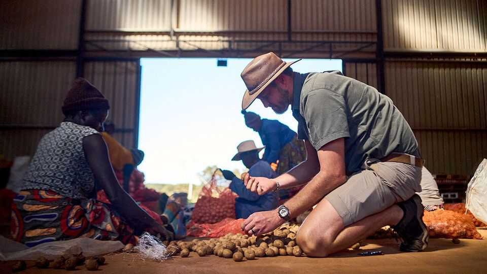
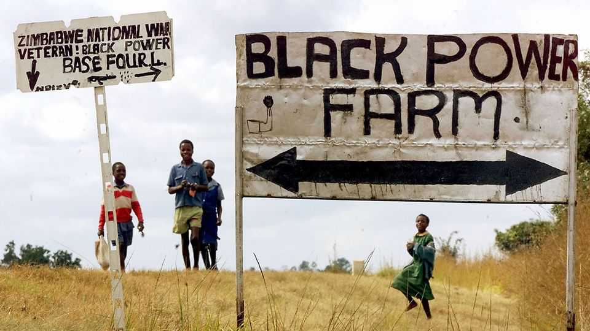
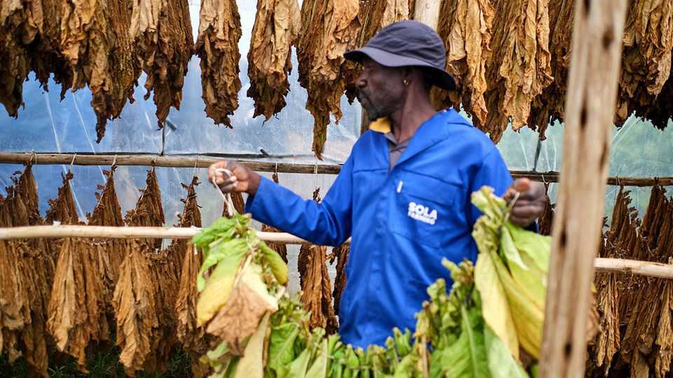

White Zimbabweans return to farming
Their return a generation after Robert Mugabe’s land grabs reflects the country’s potential—and its troubles

Oct 8th 2026
The earthy smell of drying tobacco wafted through Mvurwi, a town 100km north of Zimbabwe’s capital, Harare, earlier this year. It was boom time: the harvest, in its spectrum of autumnal colours, was piled high in warehouses. Last month official data confirmed that Zimbabwe as a whole produced the largest tobacco crop in its history. “When I came here I had nothing in my hands,” says Lovemore Chiwa, a smallholder farmer. “I had to beg to borrow a hoe.” Today he employs five women who help sort his leaves.
Such news might be surprising for outsiders who associate Zimbabwe with seized land and fallow fields. It is around 25 years since Robert Mugabe, the liberation hero-turned-dictator, dispatched thugs to grab mostly white-owned farms, a decision that immiserated his country and made him an international pariah. The disastrous legacy of what was euphemistically known as “fast-track” land reform still holds the country back. But the bumper tobacco crop reflects how, a quarter of a century on, some farmers have adapted. These include not only tobacco-growing smallholders such as Mr Chiwa but also a new generation of white farmers, who have—remarkably—entered into joint ventures with the black recipients of stolen farms. Today their number, at least 400, is about the same as or higher than that of the white farmers who have clung on since 2000.
Back then there were 4,750 white-owned commercial farms accounting for the vast majority of the country’s most productive land. Mugabe seized and redistributed most of these to two groups. Around 145,000 households were given “A1” plots of 5-6 hectares. Almost 20,000 beneficiaries were given larger “A2” plots on which they would, in theory, farm commercially.

Overall the data suggest that the country has yet to recover. Before 2000 Zimbabwe grew enough maize and soya to meet its needs. It often exported its surplus. Today it depends on imports. In the 2010s average annual maize production was half of that in the 1990s. That is mostly because many a2 holdings were given to ruling-party cronies, “war veterans” and civil servants. They were derided as urban “cell-phone farmers” without farming nous. They found credit hard to obtain because banks were wary of accepting seized land as collateral.
The new joint ventures are a response to this lack of skills and capital. Some 8,000 active arrangements typically involve the A2 holder lending “their” land in exchange for a share of its income. Most lessees are black farmers who were too young to get land in the 2000s, but a minority of them are white and involved in joint ventures. A few hundred more white farmers still operate today after farming throughout the “reform” period (usually because they agreed to downsize rather than lose everything).
The new generation is mostly Zimbabwean “farming progeny”, says one farmer. Its members are in their 30s or 40s. “They are committed to Zimbabwe and don’t want to be anywhere else.” Farming on the land of their fathers’ generation—and occasionally their actual father’s land—has led to tensions in the tight-knit white world. But most newbies ask, and get, permission from the former owners. “It is better that someone use my farm than it goes to rack and ruin,” says one ex-farmer.
Tobacco is the most commonly grown crop under joint ventures. It is the only commodity for which there is ready credit. Large tobacco firms such as China’s Tian Ze supply inputs or loans in exchange for delivery at harvest time. “Right now I love the Chinese,” says one farmer in Mvurwi.
The tobacco boom has also helped smallholders such as Mr Chiwa, who started farming when he was given an A1 plot outside Mvurwi. He has invested the profits from tobacco in property and a $200 Chinese irrigation pump to grow citrus and other fruit. The pump has done more for smallholders than any state scheme.

Yet the qualified success of tobacco also highlights failures elsewhere. State-backed efforts to increase smallholders’ maize production have been undermined by vast graft. An oligarch close to Emmerson Mnangagwa, who replaced Mugabe as president in 2017, has diverted money meant for subsidised seed and other inputs to buying mines, according to an investigation by The Sentry, an American NGO, published in 2022 (the oligarch denies wrongdoing).
Ultimately Zimbabwe cannot move on as long as land is in legal purgatory. Earlier this year the government announced a new drive to hand out title deeds, including to A1 and A2 holders, to formalise holdings. Yet even if this happens, banks will still be reluctant to accept the deeds if their original owners are uncompensated. The initiative also leaves hundreds of thousands of people toiling on “communal” land.
In 2020 Mr Mnangagwa signed a deal with the Commercial Farmers Union, which represents large-scale farmers, to pay $3.5bn in compensation to the mostly white farmers. But despite redress being a condition of Zimbabwe’s coming in from the diplomatic cold, his government has not paid up. Officials within the ruling Zanu-PF party say that the president hoped that donors would help him foot the bill.
A minority of white farmers—typically poor and in their dotage—have since accepted a more miserly offer. A few dozen farmers from Denmark, Germany, the Netherlands and Switzerland have struck a separate deal. But most are holding out. Some have hired American lobbyists to bend the ear of President Donald Trump. They want to capture the attention of MAGA people much as South Africa’s Afrikaners have done (some of these farmers are also Afrikaners). But there is little sign of that so far, and Mr Mnangagwa is unlikely to care much about American criticism, given his party’s close ties to China.
In the meantime the gap between Zimbabwe’s potential and its reality widens. The record of the joint ventures illustrates the suboptimal state of farming. Partners often avoid making longer-term investments in crops that might take several years to grow, limiting their exposure to a mini-boom in avocados and blueberries. About half of the arrangements end before the contractual period, sometimes in mutual acrimony. The talk of Harare is that, having seen the challenges of agriculture up close, many young farmers are deciding to get into mining instead. ■
Sign up to the Analysing Africa, a weekly newsletter that keeps you in the loop about the world’s youngest—and least understood—continent.